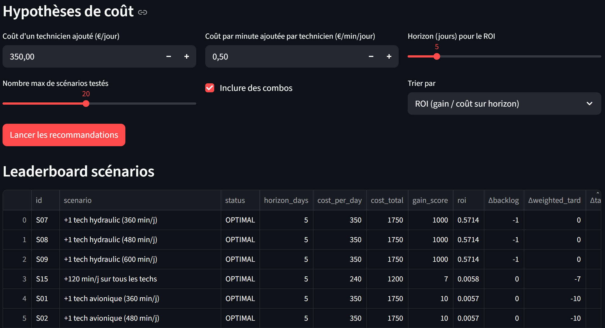

MRO / Maintenance — MVP d’optimisation de planification
Structurer une logique de planification maintenance avec des données imparfaites, en priorisant la robustesse du raisonnement
et l’évolutivité (MVP), plutôt qu’une optimisation “parfaite” sur un modèle irréaliste.
MaintenanceOptimisationOutils (Python)
Problématique
Comment planifier efficacement la maintenance avec des ressources limitées et des données imparfaites,
tout en conservant un outil compréhensible, robuste et itératif ?

Extrait du MVP MRO : planification, backlog et indicateurs de pilotage.
Démarche MVP
Structurer → tester → corriger → comparer
Structuration des données (tâches, durées, compétences, contraintes).
 Étudiant ingénieur – ESTACA
Étudiant ingénieur – ESTACA